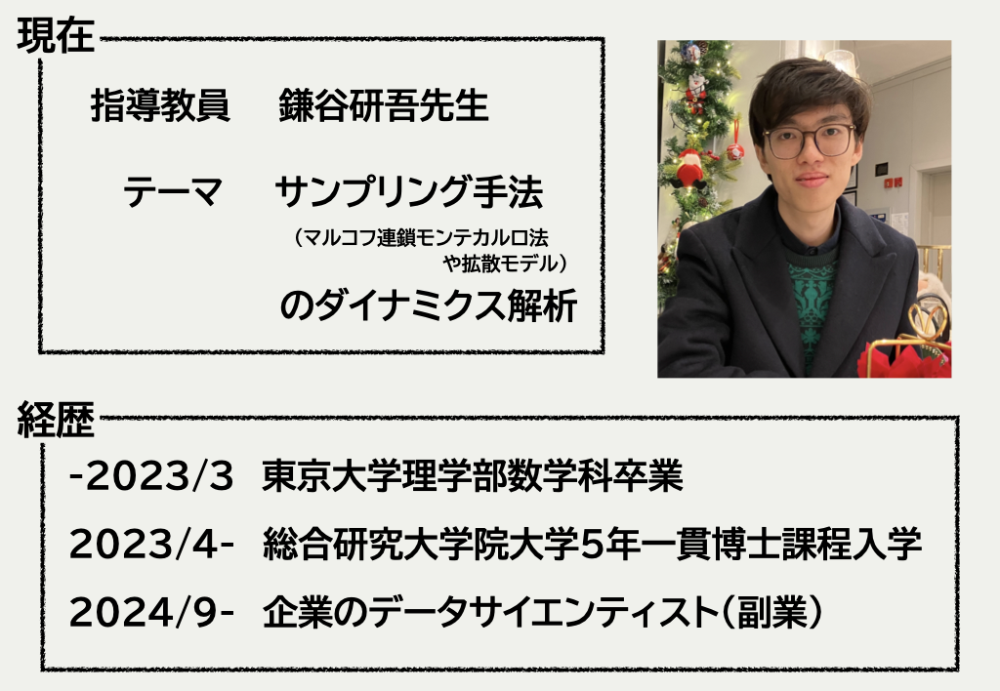
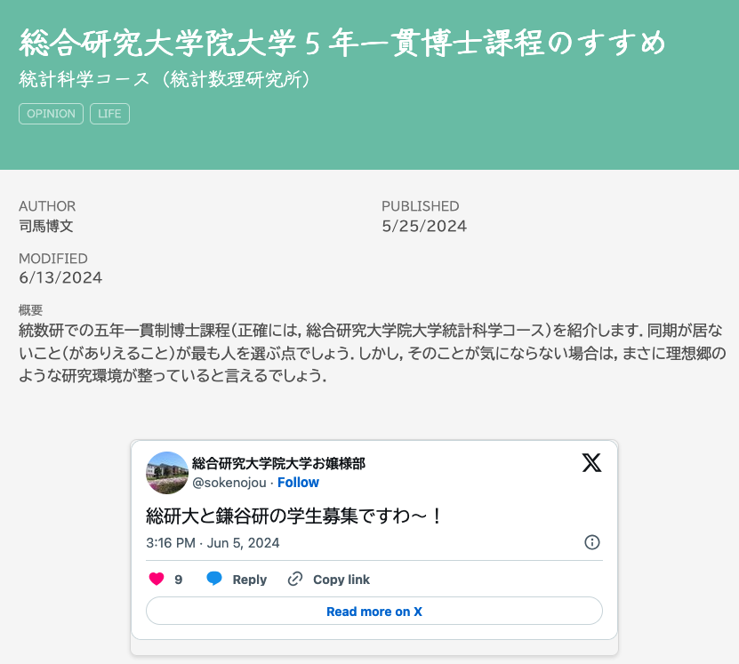

1 自己紹介
1.1 司馬博文 (Hirofumi Shiba)

1.2 研究テーマ
確率過程の統計解析（学部）

dS_t=\mu S_t\,dt+\sigma S_t\,dB_t
「正しい」パラメータ \mu,\sigma の推定
2 他の大学院との違い
① 教育システム
② 学生数：教員数の比
③ 経済的支援
2.1 統数研の教育システム
- 総合研究大学院大学 ← 学生としての所属はここ
- 先端学術院
- 先端学術専攻
統計科学コース（統計数理研究所）
情報学コース（国立情報学研究所）
天文科学コース（国立天文台）
極域科学コース（国立極地研究所）
\qquad\qquad\vdots
- 先端学術専攻
- 先端学術院
2.2 学生数
学生総数は 34 名（2024 年４月１日）
（うち社会人が 24 名）
院生室にいる固定メンバーは 6 人ほど
（うち 3 人は博士１年）．
所属研究者は 81 名（私調べ）
- 授業は基本的に少人数
- 準必修科目でも学生は多くて 3 人ほど
- 先生方との距離が近い
- 授業は基本的に少人数
2.3 経済的支援（独自のものに限る）
リサーチ・アシスタント
月額 10 万円の雇用が７月から３月まで
総研大特別研究員：要申請（研究計画書＋面接）
- SPRING：月額19万円（学振と同額）
- BOOST：AI 特化だが月額30万（来年度で終わり）
総研大研究派遣プログラム
渡航費と研究支援金（滞在費）を援助
2.4 総研大の学生1人当たり教育経費

3 自分の場合
① 想定通りだったこと
② 想定外だったこと
③ まとめと注意喚起
3.1 想定通りだったこと
博士を取ることは決めてるなら向いてる
- これは大正解だった
- 最初から研究者のたまご扱いをしてくれる
入ってから面白いテーマに出会える
- これも大正解
- 入学後に統計関連分野を見渡せる稀有な場所
- 指導教員との（分野的・人間的）相性，直感が大事
3.2 想定外だったこと
△ 経済的な支援が充実 → ○ 総合的な支援が充実
- トップ層にとっては，金額的には他の大学の方が充実していることもある
- しかし平均的な学生にかける金額は総研大が圧倒
△ 学生交流が薄い → ○ 同年代・同分野の交流は薄い
- 総研大で見れば学生は多く，交流の機会も作れる
- 先輩の三戸さんが空気を変えつつある
- 身近な問題を相談できる人は確かに少ない
- 総研大で見れば学生は多く，交流の機会も作れる
3.3 終わりに：注意喚起
- 半強制的な交流は少ない
- 院生室の人数は少ない
- 同じ指導教員につく同年代の学生は基本いない
- 主体的に動かないと何も起こらない
- 自分の将来を考えて動けるのは自分だけ
博士を目指して積極的に動ける人にとっては天国
3.4 情報提供

参考文献
Kreis, K., Gao, R., and Vahdat, A. (2022). Denoising diffusion-based generative modeling: Foundations and applications.